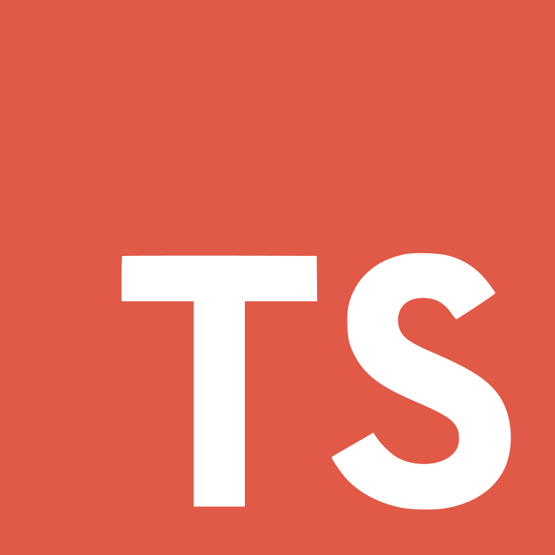

Mon Curriculum Vitae numérique
A propos de moi

- Prénom : Clément
- Nom : Guillaume
- Age : 27 ans
- Ville : Versailles (78)
Développeur web junior, je suis atuellement en alternance chez
NewBound afin d'obtenir un Bac +3 "Concepteur Développeur
d'applications".
Je profite de mon temps libre pour développer d'autres
compétences, principalement en front-end.
Ayant une formation d'Ingénieur Mécanique spécialisé dans
la Simulation Numérique, j'ai décidé de me reconvertir en tant
que développeur Web. Ayant toujours eu une attirance pour le
domaine du numérique, j'ai décidé de sauter le pas et de tenter
une nouvelle aventure.
Etant quelqu'un d'autonome, je peux travailler seul ou en
groupe, et mes expériences passés font que je sais m'adapter
rapidement à un environnement inconnu. Je cherche toujours à
satisfaire au mieux les demandes du client, en m'adaptant à ses
besoins et en étant force de proposition.
Mes compétences
Front-End
Création de site web responsive, accessibles et répondant aux critères W3C.
Back-End
Développement de la base de donnée en programmation orienté objet et mise en ligne.
Framework
Base de données
Création et gestion de base de données.
Web Design
Création de maquette fonctionnelle.
Environnement de travail
Système d'exploitation : Window 10, Window 11
Workflow : Git, Github, Gitlab, Dockers
IDE : Visual Studio Code, Visual Studio
Langue : Anglais (TOEIC : 925)
Mon Parcours
-
Avril 2022 - Mai 2023
Développeur web
NewBound, Paris (9ème arrondissement)
Développeur avec pour mission :
- Réalisation d'une façade servant de couche intermédiaire entre l'API et l'interface web (reéalisée sous NodeJS)
- Rélisation d'une inteface web responsive (ReactJS, Tailwind)
- Rélisation d'une documentation technique -
Avril 2022 - Mai 2023
Formation Concepteur Développeur d'Applications BAC+3
La Manu, Versailles (78)
Projet "Marya" (site d'aide à domicil/aide à la personne) avec la réalisation des quatres applications :
- Réalisation d'une API suivant les besoins du client (NodeJS)
- Rélisation d'une application web (ReactJS, Material UI)
- Rélisation d'une application mobile (React Native)
- Rélisation d'une application bureautique (C# .NET WPF)
- Rélisation d'un Docker pour chaque application -
Octobre 2021 - Mars 2022
Formation Développeur web et web mobile BAC+2
La Manu, Versailles (78)
Préparation au Titre Profesionnel "Développeur web et web mobile"
-
Juin 2019 - Juin 2020
Ingénieur Mécanique
Framatome, Courbevoie (92)
Réalisation de Calcul de Dimensionnement sur le générateur de vapeur du parc existant
Analyse et post-traitement des résultats
Réalisation de Note de Calcul pour le client
Gestion de projet
Animation de réunion client
-
Septembre 2015 - Février 2019
Ecole d'ingénieur
UTC, Compiègne (60)
Filière : Génie des Systèmes Mécaniques
Spécialisation : Simulation en Ingénierie Mécanique
-
Septembre 2018 - Février 2019
Stage Ingénieur Calcul
CEA, Plateau de Saclay (91)
Mise en place du Méthodologie de Calcul entre 2 outils R&D
Réalisation de calcul statique pour le réacteur RJH
Réalisation de note de calcul pour le client
-
Septembre 2013 - Juillet 2015
DUT
IUT, Amiens (80)
Filière : Génie Mécanique et Productique
-
Juillet 2013
Baccaulauréat
Lycée Jean Calvin, Noyon (60)
Filière : Scientifique Option Physique-Chimie
Mention Très Bien
Mes projets
Marya Web
Projet d'école ayant pour but la mise en place d'une application web pour Marya.
Objectif du projet :
- Connexion/inscription d'un client
- Affichage/Modification du profil
- Création d'une prestation suivant le service voulue par le client
- Affichage des réservations en cours/à venir
Langagues/Framework utilisés :
- 
Marya Mobile
Projet d'école ayant pour but la mise en place d'une application mobile pour Marya.
Objectif du projet :
- Connexion/inscription d'un partenaire
- Affichage/Modification du profil
- Affichage des prestations à accepter suivant le service définie par le profil du prestataire
- Planning des prestations du jour/à venir/passées
Languagues/Framework utilisés :
Dashboard Sneaker
Projet personnel ayant pour but la gestion d'un stock de paires de chaussures.
Objectif du projet :
- Ajout/modification de paires
- Affichage du stock par mois/global
- Affichage des ventes par mois/global
- Ajout de marques/sites
- Statistiques d'achat/ventes
Langagues/Framework utilisés :
Mag'Phone
Projet d'alternance ayant de rédifinir une interface web pour le logiciel PROS
Objectif du projet :
- Réalisation d'une interface web responsive
- Réalisation d'une couche intermédiaire (façade) entre l'API Pros et l'interface web afin de simplifier les appels et réponses
Langagues/Framework utilisés :
Me contacter
Actuellement en alternance, je suis à le recherche d'une nouvelle opportunité en tant que :
- Développeur Front-End
- Développeur Full Stack
- Développeur Back-End